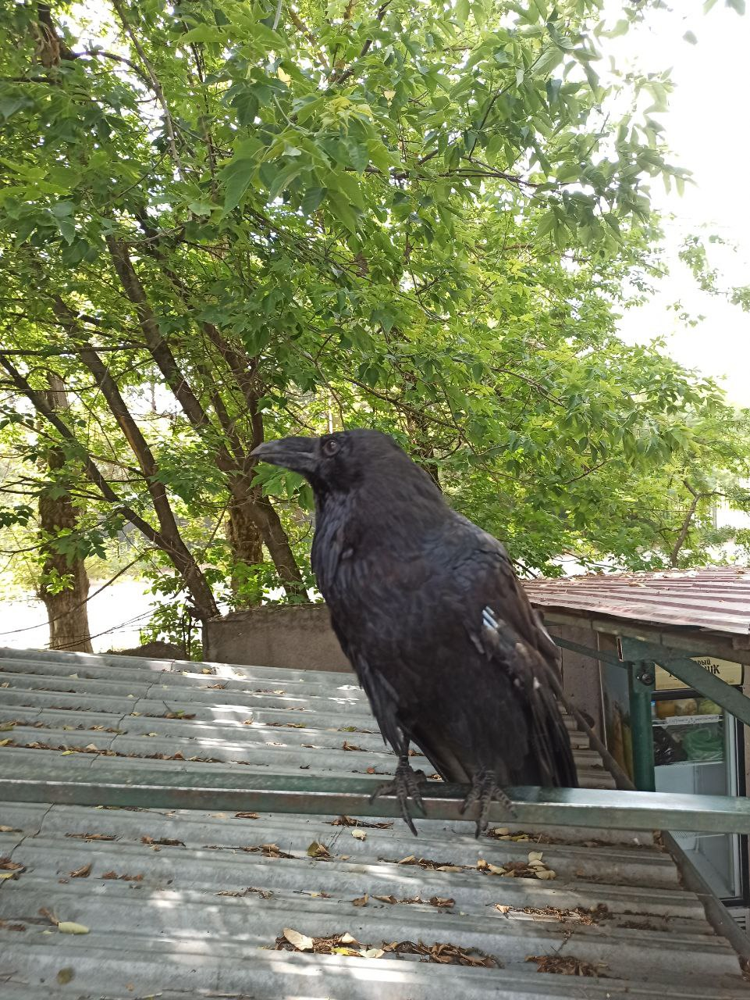

История воронов
Вороны появились на ферме приблизительно в 2020 году. Тогда были спасены трое воронов с переломанными крыльями. Их приютили на ферме, однако из-за травм вороны больше не могли летать. К сожалению, один из воронов вскоре умер от голода, и их осталось двое - Муха и Один. Поскольку они были спасены уже во взрослом возрасте, они остались довольно дикими и неприрученными.Муха и Один довольно часто сбегали с фермы, но так как они не могли летать, их все время ловили и возвращали. Муха постоянно выщипывала себе перья, отчего она ходила наполовину лысой. Возможно, это случалось из-за блох или клещей. В 2022 году Муха безвозвратно сбежала с фермы, и с тех пор Один там живет в одиночку. Для него был построен довольно просторный вольер, откуда его часто выпускают гулять. Так как он дикий, он ведет себя довольно недружелюбно и может даже клеваться, впрочем он делает это редко. Также он крайне редко дается гладиться, и только тем, кто кормит его. Зато когда Одина выпускают из вольера, он любит с важным видом расхаживать по своим владениям или сидеть где-нибудь на крыше или высокой ветке, куда он может запрыгнуть. Также Один любит играть с ветками и листьями и закапывать излишки своей еды. При этом он всегда запоминает свои нычки и очень расстраивается, когда их раскапывают люди или дикие крысы.

Один на крыше, 16 июля 2025 года

Один ищет еду, 16 июля 2025 года
Интересные факты
Вороны являются практически всеядными. Помимо растительной пищи они могут питаться падалью и даже охотиться на маленьких животных. Так, Один легко ест мышей, а один раз он даже поймал и съел голубя. Мощная печень позволяет воронам легко переваривать гниль и яды.Вороны обладают высоким интеллектом и могут даже подражать человеческой речи. Они могут обучаться некоторым командам и ждать, если они знают, что после этого что-то получат. Однако Один не умеет разговаривать или подражать другим человеческим звукам, ведь никто не тренирует его для этого.